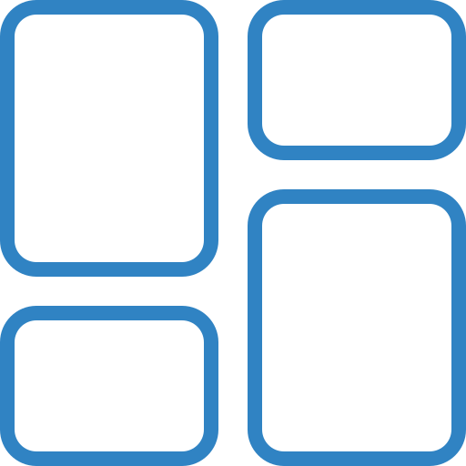
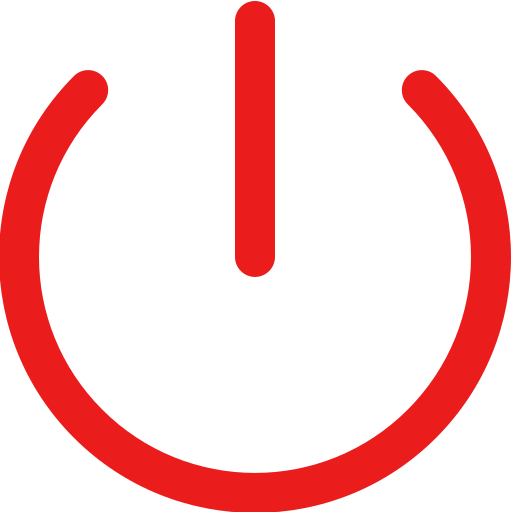

<div id="dropdown-container" cdkTrapFocus [cdkTrapFocusAutoCapture]="true">
  <div id="profile-summary">
    <div id="profile-photo-container">
      <div id="profile-photo">
        <span>
          {{briefData?.name?.substr(0, 2)?.toUpperCase()}}
        </span>
      </div>
    </div>
    <div id="summary">
      <span id="name">{{briefData?.name}}</span>
      <span id="email">{{briefData?.email}}</span>
    </div>
  </div>
  <div id="user-pages">
    <div class="page-buttons">
      
      <span>profile</span>
    </div>
    <div class="page-buttons"
         *ngIf="!isCurrentRouteOnUserPage()"
         (click)="goToUserDashboard()">
      
      <span>dashboard</span>
    </div>
  </div>
  <div id="logout">
    <div class="page-buttons" (click)="logoutUser()">
      
      <span>logout</span>
    </div>
  </div>
</div>
